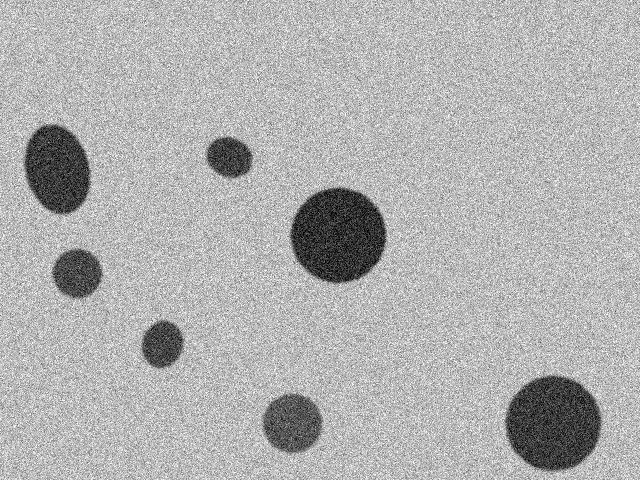
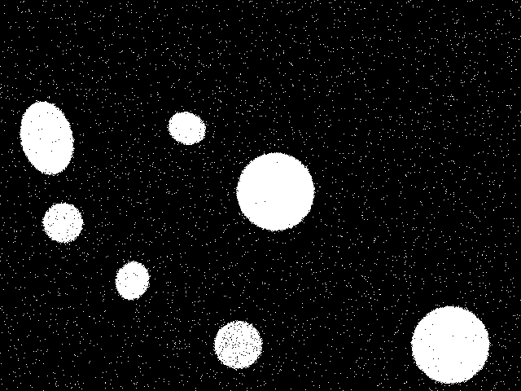
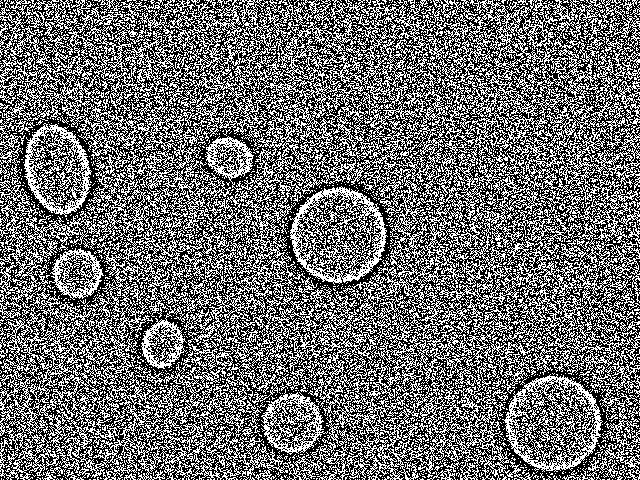

Degradation Setup
Sweep MatrixApply systematic perturbations to test algorithmic stability and segmentation decay thresholds.
Active only when Perturbation Channel is set to Motion Blur
Matrix: 8 levels × 4 algorithms
Diagnostic Heuristics
Gaussian noise perturbs intensities pixel-wise: Global threshold degrades gracefully until noise crosses T=127; Otsu calculates adaptive bimodal minimums; Canny edge detection suffers high false-positive gradients once σ > 15.
Live Preview at Single Degradation Step
Interactive single-slice visualization comparing mask segmentations against baseline ground truth.



Algorithm Robustness Across Degradation Spectrum
Decay profiles demonstrating Jaccard IoU retention against escalating Gaussian noise severity.
Degradation Level Performance Breakdown
Quantitative evaluation matrix against benchmark ground-truth mask across 8 noise iterations.
| Level (Severity) | Global Threshold | Otsu's Method | Adaptive Local | Edge-Based | Top Pipeline |
|---|
dataset/images/normal_01.png against exact geometric ground truth.
Session UID: EXP_STRESS_NORM01_0488